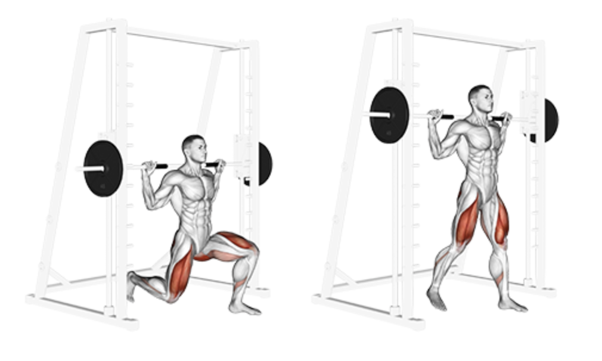

Static Lunges
Setup
Set the Smith machine bar at shoulder height and load your desired weight.
Step under the bar and rest it on your upper traps, gripping it with both hands.
Unrack the bar by rotating it and step one leg forward into a lunge stance.
Keep your torso upright and core braced throughout the movement.

Execution
Lower:
Inhale and slowly lower your back knee toward the floor, forming a 90° angle with both knees.
Hold:
Briefly pause at the bottom to engage the glutes and quads.
Push Up:
Exhale and push through the front heel to return to the starting position.
Repeat:
Complete the reps on one side before switching legs.
Tips for Effectiveness
Foot Position:
Ensure your front foot is far enough forward to prevent your knee from going past your toes.
Controlled Motion:
Move slowly to maintain tension and improve balance.
Engage Core:
A tight core stabilizes your posture and protects your lower back.
Keep Upright:
Avoid leaning forward; maintain a straight torso.
Benefits of Static Lunges
Leg Strength:
Builds strength in quads, hamstrings, and glutes.
Stability:
Enhances balance and control with the support of the Smith machine.
Muscle Imbalance Correction:
Targets each leg independently for better symmetry.
Safe Progression:
Ideal for beginners to practice form before trying free weights.
Do you want to change the language of this page?
English
Malayalam
Tamil
Hindi